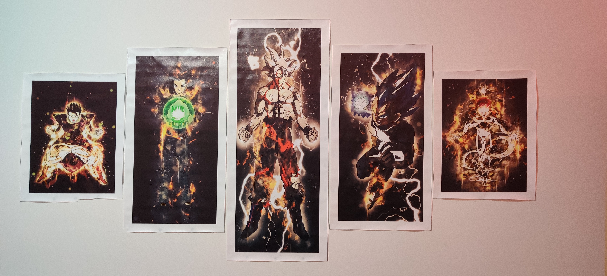
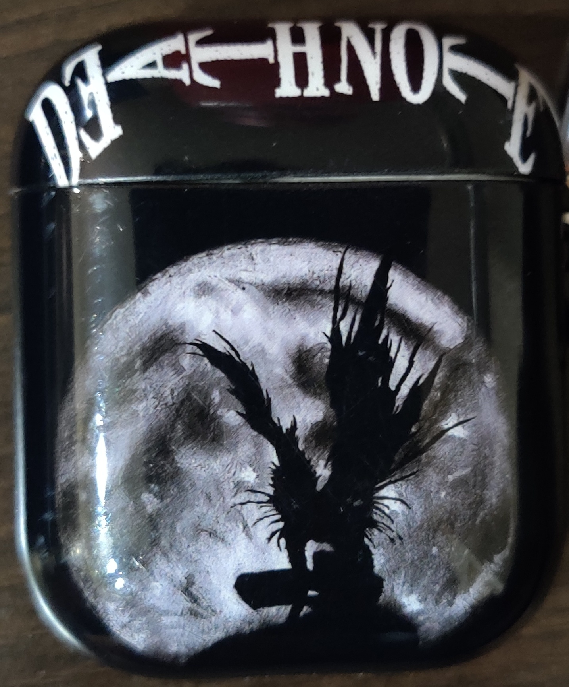

I really like watching animes and Dragon Ball Z is one of the classics. It has several cool characters from different planets and universes like Goku, Vegeta, Captain Ginyu, Jaco. The storyline follows the life of Goku, who is a saiyan, and how he always goes beyond his limits to become a better fighter.
The God of High School is a Korean anime show that revolves around the main character Jin Mori and his learnings from his grandfather Jin Taejin. It has a slight sudden story arc where things change really quickly between episodes but it's a fun show.
Death Note is rated one of the best animes of all time. It has a really diffent storyline where the main character, Light Yagami, finds a deathnote which has the ability to kill anyone whose name is written in it. The story of the show is explored in a grey area and is a really interesting show to watch.
